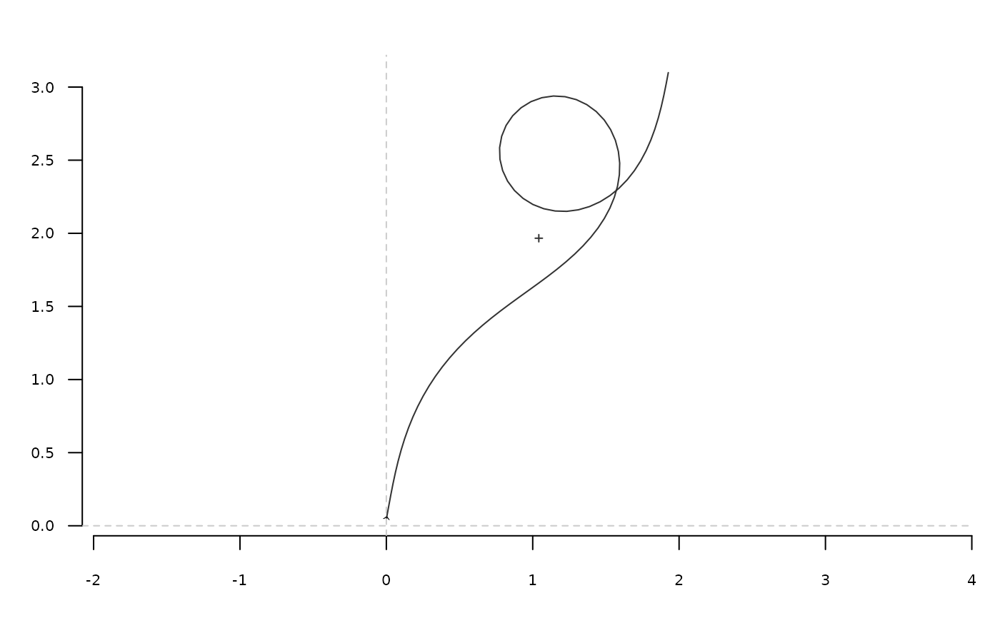

tfourier_shape calculates a 'Fourier tangent angle shape' given
Fourier coefficients (see Details) or can generate some 'tfourier'
shapes.
tfourier_shape(an, bn, ao = 0, nb.h, nb.pts = 80, alpha = 2, plot = TRUE)
Arguments
| an |
|
|---|---|
| bn |
|
| ao |
|
| nb.h |
|
| nb.pts |
|
| alpha |
|
| plot |
|
Value
A matrix of (x; y) coordinates.
References
Claude, J. (2008) Morphometrics with R, Use R! series, Springer 316 pp.
See also
Other tfourier:
tfourier_i(),
tfourier()
Examples
#> x y #> [1,] -0.068536123 0.03816985 #> [2,] 0.010421770 0.02861438 #> [3,] -0.063790622 0.05721817 #> [4,] -0.140579972 0.07793172 #> [5,] -0.183238239 0.14505793 #> [6,] -0.247181702 0.19235370 #> [7,] -0.320133871 0.22403393 #> [8,] -0.368197883 0.28740195 #> [9,] -0.418456077 0.34904422 #> [10,] -0.483991433 0.39410832 #> [11,] -0.527015593 0.46100060 #> [12,] -0.558482563 0.53404501 #> [13,] -0.615378810 0.58961904 #> [14,] -0.666002527 0.65096148 #> [15,] -0.703250243 0.72123426 #> [16,] -0.768466384 0.76675910 #> [17,] -0.843721723 0.79249409 #> [18,] -0.920086430 0.81472216 #> [19,] -0.990492372 0.77772677 #> [20,] -1.035089701 0.71187289 #> [21,] -1.107991534 0.68007700 #> [22,] -1.173409209 0.63484224 #> [23,] -1.172271234 0.55531639 #> [24,] -1.245117865 0.52339423 #> [25,] -1.169306190 0.54744097 #> [26,] -1.166890972 0.46794366 #> [27,] -1.134401707 0.39534818 #> [28,] -1.068636587 0.35062006 #> [29,] -1.007856315 0.29932275 #> [30,] -0.955597746 0.23936695 #> [31,] -0.898595892 0.18390125 #> [32,] -0.832707879 0.13935435 #> [33,] -0.769939719 0.09050956 #> [34,] -0.718591641 0.02977217 #> [35,] -0.653105984 -0.01536412 #> [36,] -0.579711689 -0.04600613 #> [37,] -0.541356302 -0.11568052 #> [38,] -0.489158357 -0.17568911 #> [39,] -0.526675851 -0.10555999 #> [40,] -0.483094002 -0.17209027 #> [41,] -0.411233403 -0.20617413 #> [42,] -0.384991638 -0.28125426 #> [43,] -0.346581120 -0.35089827 #> [44,] -0.281483742 -0.39659277 #> [45,] -0.223918101 -0.45147312 #> [46,] -0.163346561 -0.50301673 #> [47,] -0.086698985 -0.52424890 #> [48,] -0.009264515 -0.54240265 #> [49,] 0.061119622 -0.57943951 #> [50,] 0.129392040 -0.62023819 #> [51,] 0.196505793 -0.66291605 #> [52,] 0.256624481 -0.71498715 #> [53,] 0.315395180 -0.76857503 #> [54,] 0.379092808 -0.81620137 #> [55,] 0.442596932 -0.86408541 #> [56,] 0.501564226 -0.91745689 #> [57,] 0.558878373 -0.97259983 #> [58,] 0.616862632 -1.02703770 #> [59,] 0.683127662 -1.07102180 #> [60,] 0.761505112 -1.05750770 #> [61,] 0.789105491 -0.98291631 #> [62,] 0.836639557 -0.91914980 #> [63,] 0.850183366 -0.99752212 #> [64,] 0.787935223 -0.94801632 #> [65,] 0.760460379 -0.87337860 #> [66,] 0.699791505 -0.82194959 #> [67,] 0.638226839 -0.77159636 #> [68,] 0.596708767 -0.70375901 #> [69,] 0.552733618 -0.63748804 #> [70,] 0.492705339 -0.58531274 #> [71,] 0.437325328 -0.52822763 #> [72,] 0.414799359 -0.45195026 #> [73,] 0.364582422 -0.39027438 #> [74,] 0.378601540 -0.46856307 #> [75,] 0.344461362 -0.39672921 #> [76,] 0.268368346 -0.37358815 #> [77,] 0.341471182 -0.34225716 #> [78,] 0.264568188 -0.36254472 #> [79,] 0.260420375 -0.28311896 #> [80,] 0.189614910 -0.24689408tfourier_shape()#> x y #> [1,] 0.03481557 0.04581193 #> [2,] 0.09754979 0.09470030 #> [3,] 0.16339069 0.13931681 #> [4,] 0.23215839 0.17927503 #> [5,] 0.30358762 0.21425388 #> [6,] 0.37734428 0.24401311 #> [7,] 0.45304534 0.26840583 #> [8,] 0.53028109 0.28738724 #> [9,] 0.60863819 0.30101884 #> [10,] 0.68772209 0.30946830 #> [11,] 0.76717740 0.31300518 #> [12,] 0.84670495 0.31199343 #> [13,] 0.92607451 0.30688166 #> [14,] 1.00513242 0.29819249 #> [15,] 1.08380403 0.28651204 #> [16,] 1.16209055 0.27248072 #> [17,] 1.24006062 0.25678604 #> [18,] 1.31783695 0.24015781 #> [19,] 1.39557806 0.22336566 #> [20,] 1.47345567 0.20721840 #> [21,] 1.55162797 0.19256415 #> [22,] 1.63020912 0.18028983 #> [23,] 1.70923546 0.17131805 #> [24,] 1.78862934 0.16659922 #> [25,] 1.86816178 0.16709665 #> [26,] 1.94741599 0.17376194 #> [27,] 2.02575464 0.18749917 #> [28,] 2.10229460 0.20911608 #> [29,] 2.17589377 0.23926268 #> [30,] 2.24515535 0.27835857 #> [31,] 2.30845472 0.32651296 #> [32,] 2.36399368 0.38344344 #> [33,] 2.40988486 0.44840232 #> [34,] 2.44426645 0.52012095 #> [35,] 2.46544362 0.59678374 #> [36,] 2.47204810 0.67604304 #> [37,] 2.46320318 0.75508368 #> [38,] 2.43867709 0.83074164 #> [39,] 2.39900540 0.89967503 #> [40,] 2.34556336 0.95857838 #> [41,] 2.28057190 1.00442340 #> [42,] 2.20702761 1.03470364 #> [43,] 2.12855543 1.04765635 #> [44,] 2.04919300 1.04243516 #> [45,] 1.97312530 1.01921104 #> [46,] 1.90439588 0.97918701 #> [47,] 1.84662533 0.92452240 #> [48,] 1.80276696 0.85817408 #> [49,] 1.77492533 0.78367241 #> [50,] 1.76425442 0.70485752 #> [51,] 1.77094200 0.62560519 #> [52,] 1.79427551 0.54957096 #> [53,] 1.83277563 0.47997645 #> [54,] 1.88437717 0.41945424 #> [55,] 1.94663382 0.36995915 #> [56,] 2.01692413 0.33274451 #> [57,] 2.09263931 0.30839564 #> [58,] 2.17133917 0.29690708 #> [59,] 2.25086828 0.29778853 #> [60,] 2.32943037 0.31018420 #> [61,] 2.40562388 0.33299222 #> [62,] 2.47844439 0.36497392 #> [63,] 2.54726201 0.40484610 #> [64,] 2.61178159 0.45135287 #> [65,] 2.67199330 0.50331637 #> [66,] 2.72811984 0.55966766 #> [67,] 2.78056465 0.61946061 #> [68,] 2.82986431 0.68187214 #> [69,] 2.87664651 0.74619229 #> [70,] 2.92159408 0.81180763 #> [71,] 2.96541476 0.87818084 #> [72,] 3.00881593 0.94482913 #> [73,] 3.05248314 1.01130341 #> [74,] 3.09706175 1.07716997 #> [75,] 3.14314074 1.14199575 #> [76,] 3.19123843 1.20533822 #> [77,] 3.24178983 1.26674028 #> [78,] 3.29513599 1.32573046 #> [79,] 3.35151589 1.38182826 #> [80,] 3.41106130 1.43455396tfourier_shape(nb.h=6, alpha=0.4, nb.pts=500)#> x y #> [1,] 0.0128702174 -0.0002611461 #> [2,] 0.0254137125 -0.0013602168 #> [3,] 0.0379511650 -0.0025261966 #> [4,] 0.0504737222 -0.0038425500 #> [5,] 0.0629695653 -0.0053921082 #> [6,] 0.0754223256 -0.0072565079 #> [7,] 0.0878095872 -0.0095154842 #> [8,] 0.1001015202 -0.0122459803 #> [9,] 0.1122596938 -0.0155210437 #> [10,] 0.1242361266 -0.0194084955 #> [11,] 0.1359726347 -0.0239693730 #> [12,] 0.1474005404 -0.0292561675 #> [13,] 0.1584408049 -0.0353109000 #> [14,] 0.1690046392 -0.0421630989 #> [15,] 0.1789946370 -0.0498277691 #> [16,] 0.1883064542 -0.0583034570 #> [17,] 0.1968310343 -0.0675705363 #> [18,] 0.2044573490 -0.0775898451 #> [19,] 0.2110755884 -0.0883018072 #> [20,] 0.2165806994 -0.0996261605 #> [21,] 0.2208761353 -0.1114623954 #> [22,] 0.2238776503 -0.1236909739 #> [23,] 0.2255169495 -0.1361753611 #> [24,] 0.2257449939 -0.1487648496 #> [25,] 0.2245347638 -0.1612981081 #> [26,] 0.2218832998 -0.1736073308 #> [27,] 0.2178128743 -0.1855228191 #> [28,] 0.2123711924 -0.1968777882 #> [29,] 0.2056305754 -0.2075131682 #> [30,] 0.1976861429 -0.2172821608 #> [31,] 0.1886530721 -0.2260543246 #> [32,] 0.1786630669 -0.2337189852 #> [33,] 0.1678602218 -0.2401878152 #> [34,] 0.1563964928 -0.2453964756 #> [35,] 0.1444270104 -0.2493052755 #> [36,] 0.1321054638 -0.2518988664 #> [37,] 0.1195797713 -0.2531850443 #> [38,] 0.1069882200 -0.2531927817 #> [39,] 0.0944562140 -0.2519696505 #> [40,] 0.0820937253 -0.2495788140 #> [41,] 0.0699934896 -0.2460957807 #> [42,] 0.0582299425 -0.2416051031 #> [43,] 0.0468588532 -0.2361971873 #> [44,] 0.0359175775 -0.2299653568 #> [45,] 0.0254258327 -0.2230032798 #> [46,] 0.0153868845 -0.2154028361 #> [47,] 0.0057890341 -0.2072524685 #> [48,] -0.0033926995 -0.1986360311 #> [49,] -0.0121947947 -0.1896321239 #> [50,] -0.0206634134 -0.1803138772 #> [51,] -0.0288526164 -0.1707491409 #> [52,] -0.0368226400 -0.1610010155 #> [53,] -0.0446382551 -0.1511286609 #> [54,] -0.0523672056 -0.1411883113 #> [55,] -0.0600787176 -0.1312344273 #> [56,] -0.0678420577 -0.1213209125 #> [57,] -0.0757251150 -0.1115023264 #> [58,] -0.0837929839 -0.1018350250 #> [59,] -0.0921065270 -0.0923781637 #> [60,] -0.1007209056 -0.0831944985 #> [61,] -0.1096840794 -0.0743509279 #> [62,] -0.1190352887 -0.0659187211 #> [63,] -0.1288035500 -0.0579733894 #> [64,] -0.1390062113 -0.0505941668 #> [65,] -0.1496476282 -0.0438630842 #> [66,] -0.1607180335 -0.0378636383 #> [67,] -0.1721926826 -0.0326790792 #> [68,] -0.1840313549 -0.0283903656 #> [69,] -0.1961782899 -0.0250738622 #> [70,] -0.2085626209 -0.0227988743 #> [71,] -0.2210993499 -0.0216251407 #> [72,] -0.2336908794 -0.0216004145 #> [73,] -0.2462290847 -0.0227582717 #> [74,] -0.2585978763 -0.0251162834 #> [75,] -0.2706761657 -0.0286746750 #> [76,] -0.2823411186 -0.0334155714 #> [77,] -0.2934715550 -0.0393028977 #> [78,] -0.3039513400 -0.0462829643 #> [79,] -0.3136726064 -0.0542857267 #> [80,] -0.3225386554 -0.0632266662 #> [81,] -0.3304664052 -0.0730092021 #> [82,] -0.3373882796 -0.0835275138 #> [83,] -0.3432534708 -0.0946696301 #> [84,] -0.3480285441 -0.1063206344 #> [85,] -0.3516973959 -0.1183658306 #> [86,] -0.3542606118 -0.1306937318 #> [87,] -0.3557343011 -0.1431987494 #> [88,] -0.3561485097 -0.1557834885 #> [89,] -0.3555453251 -0.1683605864 #> [90,] -0.3539767939 -0.1808540621 #> [91,] -0.3515027672 -0.1932001715 #> [92,] -0.3481887793 -0.2053477931 #> [93,] -0.3441040502 -0.2172583855 #> [94,] -0.3393196802 -0.2289055753 #> [95,] -0.3339070875 -0.2402744391 #> [96,] -0.3279367153 -0.2513605512 #> [97,] -0.3214770198 -0.2621688609 #> [98,] -0.3145937296 -0.2727124629 #> [99,] -0.3073493587 -0.2830113131 #> [100,] -0.2998029394 -0.2930909351 #> [101,] -0.2920099400 -0.3029811518 #> [102,] -0.2840223262 -0.3127148690 #> [103,] -0.2758887220 -0.3223269295 #> [104,] -0.2676546321 -0.3318530509 #> [105,] -0.2593626859 -0.3413288545 #> [106,] -0.2510528707 -0.3507889917 #> [107,] -0.2427627250 -0.3602663705 #> [108,] -0.2345274712 -0.3697914858 #> [109,] -0.2263800715 -0.3793918557 #> [110,] -0.2183511983 -0.3890915681 #> [111,] -0.2104691177 -0.3989109382 #> [112,] -0.2027594894 -0.4088662814 #> [113,] -0.1952450944 -0.4189698002 #> [114,] -0.1879455025 -0.4292295850 #> [115,] -0.1808767016 -0.4396497231 #> [116,] -0.1740507051 -0.4502305074 #> [117,] -0.1674751629 -0.4609687321 #> [118,] -0.1611529938 -0.4718580573 #> [119,] -0.1550820606 -0.4828894215 #> [120,] -0.1492549027 -0.4940514758 #> [121,] -0.1436585400 -0.5053310125 #> [122,] -0.1382743565 -0.5167133582 #> [123,] -0.1330780681 -0.5281827005 #> [124,] -0.1280397776 -0.5397223215 #> [125,] -0.1231241157 -0.5513147110 #> [126,] -0.1182904683 -0.5629415368 #> [127,] -0.1134932888 -0.5745834565 #> [128,] -0.1086825005 -0.5862197592 #> [129,] -0.1038039932 -0.5978278336 #> [130,] -0.0988002281 -0.6093824673 #> [131,] -0.0936109687 -0.6208549915 #> [132,] -0.0881741613 -0.6322122954 #> [133,] -0.0824269950 -0.6434157460 #> [134,] -0.0763071723 -0.6544200630 #> [135,] -0.0697544234 -0.6651722120 #> [136,] -0.0627122928 -0.6756103929 #> [137,] -0.0551302137 -0.6856632186 #> [138,] -0.0469658762 -0.6952491884 #> [139,] -0.0381878641 -0.7042765761 #> [140,] -0.0287785117 -0.7126438524 #> [141,] -0.0187368914 -0.7202407653 #> [142,] -0.0080818017 -0.7269501833 #> [143,] 0.0031454146 -0.7326507831 #> [144,] 0.0148784364 -0.7372206217 #> [145,] 0.0270241562 -0.7405415728 #> [146,] 0.0394617599 -0.7425045399 #> [147,] 0.0520429514 -0.7430152702 #> [148,] 0.0645935485 -0.7420005109 #> [149,] 0.0769166172 -0.7394141613 #> [150,] 0.0887972191 -0.7352430078 #> [151,] 0.1000087316 -0.7295115845 #> [152,] 0.1103205579 -0.7222856960 #> [153,] 0.1195069049 -0.7136741774 #> [154,] 0.1273561681 -0.7038285543 #> [155,] 0.1336803520 -0.6929403992 #> [156,] 0.1383238936 -0.6812363509 #> [157,] 0.1411712398 -0.6689709587 #> [158,] 0.1421525896 -0.6564177050 #> [159,] 0.1412473267 -0.6438587352 #> [160,] 0.1384848395 -0.6315739523 #> [161,] 0.1339426343 -0.6198302052 #> [162,] 0.1277418708 -0.6088712930 #> [163,] 0.1200406560 -0.5989094399 #> [164,] 0.1110256104 -0.5901187529 #> [165,] 0.1009023368 -0.5826309925 #> [166,] 0.0898854760 -0.5765337798 #> [167,] 0.0781890172 -0.5718711542 #> [168,] 0.0660174526 -0.5686462137 #> [169,] 0.0535582409 -0.5668254260 #> [170,] 0.0409758896 -0.5663441131 #> [171,] 0.0284078073 -0.5671125730 #> [172,] 0.0159619216 -0.5690223258 #> [173,] 0.0037159403 -0.5719520298 #> [174,] -0.0082819629 -0.5757727031 #> [175,] -0.0200112992 -0.5803519929 #> [176,] -0.0314765318 -0.5855573428 #> [177,] -0.0427037136 -0.5912580107 #> [178,] -0.0537367102 -0.5973259766 #> [179,] -0.0646331611 -0.6036358564 #> [180,] -0.0754602713 -0.6100639906 #> [181,] -0.0862904662 -0.6164869265 #> [182,] -0.0971968952 -0.6227795436 #> [183,] -0.1082487437 -0.6288131056 #> [184,] -0.1195063047 -0.6344535439 #> [185,] -0.1310157907 -0.6395602999 #> [186,] -0.1428039132 -0.6439860648 #> [187,] -0.1548723433 -0.6475777525 #> [188,] -0.1671922728 -0.6501790141 #> [189,] -0.1796994174 -0.6516345410 #> [190,] -0.1922899321 -0.6517962969 #> [191,] -0.2048178180 -0.6505316633 #> [192,] -0.2170944713 -0.6477332690 #> [193,] -0.2288910255 -0.6433300276 #> [194,] -0.2399440538 -0.6372986273 #> [195,] -0.2499649952 -0.6296744580 #> [196,] -0.2586533583 -0.6205607555 #> [197,] -0.2657133422 -0.6101346416 #> [198,] -0.2708730407 -0.5986487922 #> [199,] -0.2739049147 -0.5864277053 #> [200,] -0.2746458172 -0.5738579683 #> [201,] -0.2730146013 -0.5613725223 #> [202,] -0.2690253212 -0.5494296220 #> [203,] -0.2627942764 -0.5384878988 #> [204,] -0.2545396689 -0.5289795508 #> [205,] -0.2445733786 -0.5212840793 #> [206,] -0.2332852325 -0.5157051024 #> [207,] -0.2211210182 -0.5124525473 #> [208,] -0.2085562306 -0.5116319751 #> [209,] -0.1960680351 -0.5132420056 #> [210,] -0.1841080891 -0.5171798877 #> [211,] -0.1730786766 -0.5232543659 #> [212,] -0.1633141099 -0.5312042379 #> [213,] -0.1550686317 -0.5407205036 #> [214,] -0.1485112329 -0.5514698173 #> [215,] -0.1437270148 -0.5631170695 #> [216,] -0.1407240708 -0.5753452972 #> [217,] -0.1394444274 -0.5878716589 #> [218,] -0.1397773844 -0.6004588097 #> [219,] -0.1415736221 -0.6129215845 #> [220,] -0.1446586454 -0.6251293630 #> [221,] -0.1488444636 -0.6370048062 #> [222,] -0.1539387674 -0.6485198091 #> [223,] -0.1597512349 -0.6596895203 #> [224,] -0.1660969130 -0.6705651626 #> [225,] -0.1727968763 -0.6812261999 #> [226,] -0.1796765540 -0.6917721593 #> [227,] -0.1865622559 -0.7023141864 #> [228,] -0.1932765405 -0.7129662099 #> [229,] -0.1996331772 -0.7238354507 #> [230,] -0.2054325756 -0.7350119531 #> [231,] -0.2104587012 -0.7465568778 #> [232,] -0.2144786445 -0.7584894919 #> [233,] -0.2172461350 -0.7707731486 #> [234,] -0.2185103223 -0.7833010796 #> [235,] -0.2180309933 -0.7958835066 #> [236,] -0.2156009576 -0.8082383498 #> [237,] -0.2110754971 -0.8199885598 #> [238,] -0.2044074926 -0.8306696150 #> [239,] -0.1956851085 -0.8397507626 #> [240,] -0.1851669209 -0.8466728254 #> [241,] -0.1733074217 -0.8509036059 #> [242,] -0.1607644785 -0.8520089576 #> [243,] -0.1483802122 -0.8497336178 #> [244,] -0.1371285529 -0.8440814156 #> [245,] -0.1280269000 -0.8353804307 #> [246,] -0.1220158142 -0.8243163413 #> [247,] -0.1198188091 -0.8119179385 #> [248,] -0.1218025366 -0.7994836291 #> [249,] -0.1278638207 -0.7884469602 #> [250,] -0.1373716840 -0.7801917945 #> [251,] -0.1491878451 -0.7758414427 #> [252,] -0.1617775464 -0.7760574219 #> [253,] -0.1734052881 -0.7808888655 #> [254,] -0.1823904414 -0.7897101038 #> [255,] -0.1873805614 -0.8012706370 #> [256,] -0.1875905797 -0.8138604392 #> [257,] -0.1829576464 -0.8255686907 #> [258,] -0.1741752148 -0.8345917789 #> [259,] -0.1625936226 -0.8395328262 #> [260,] -0.1500024778 -0.8396342922 #> [261,] -0.1383355936 -0.8348981504 #> [262,] -0.1293554875 -0.8260717740 #> [263,] -0.1243774752 -0.8145060220 #> [264,] -0.1240827483 -0.8019179181 #> [265,] -0.1284487863 -0.7901075440 #> [266,] -0.1367998363 -0.7806837873 #> [267,] -0.1479565089 -0.7748463322 #> [268,] -0.1604470829 -0.7732548592 #> [269,] -0.1727366852 -0.7759958265 #> [270,] -0.1834340061 -0.7826377049 #> [271,] -0.1914461404 -0.7923512486 #> [272,] -0.1960667174 -0.8040643819 #> [273,] -0.1969968731 -0.8166215327 #> [274,] -0.1943098728 -0.8289230470 #> [275,] -0.1883768202 -0.8400291765 #> [276,] -0.1797727470 -0.8492224974 #> [277,] -0.1691804175 -0.8560305647 #> [278,] -0.1573048516 -0.8602160349 #> [279,] -0.1448063700 -0.8617441650 #> [280,] -0.1322550901 -0.8607378856 #> [281,] -0.1201060029 -0.8574292747 #> [282,] -0.1086913124 -0.8521140074 #> [283,] -0.0982255750 -0.8451128957 #> [284,] -0.0888190543 -0.8367424361 #> [285,] -0.0804952618 -0.8272945949 #> [286,] -0.0732095568 -0.8170249441 #> [287,] -0.0668666642 -0.8061476770 #> [288,] -0.0613358711 -0.7948358446 #> [289,] -0.0564633929 -0.7832252382 #> [290,] -0.0520819226 -0.7714205805 #> [291,] -0.0480177203 -0.7595029681 #> [292,] -0.0440957795 -0.7475377851 #> [293,] -0.0401436770 -0.7355825305 #> [294,] -0.0359946947 -0.7236941677 #> [295,] -0.0314907312 -0.7119357011 #> [296,] -0.0264854139 -0.7003817397 #> [297,] -0.0208476877 -0.6891228202 #> [298,] -0.0144660100 -0.6782682628 #> [299,] -0.0072531232 -0.6679473380 #> [300,] 0.0008487834 -0.6583085448 #> [301,] 0.0098628553 -0.6495168593 #> [302,] 0.0197727584 -0.6417489094 #> [303,] 0.0305188113 -0.6351861683 #> [304,] 0.0419956375 -0.6300064304 #> [305,] 0.0540518715 -0.6263740140 #> [306,] 0.0664923444 -0.6244293140 #> [307,] 0.0790829945 -0.6242784653 #> [308,] 0.0915585111 -0.6259839599 #> [309,] 0.1036324576 -0.6295570594 #> [310,] 0.1150093519 -0.6349527522 #> [311,] 0.1253979520 -0.6420678217 #> [312,] 0.1345248333 -0.6507423397 #> [313,] 0.1421472729 -0.6607645970 #> [314,] 0.1480644912 -0.6718791708 #> [315,] 0.1521264365 -0.6837975527 #> [316,] 0.1542395199 -0.6962105339 #> [317,] 0.1543689867 -0.7088014220 #> [318,] 0.1525379075 -0.7212591254 #> [319,] 0.1488230575 -0.7332902150 #> [320,] 0.1433481882 -0.7446292198 #> [321,] 0.1362753622 -0.7550466263 #> [322,] 0.1277951087 -0.7643542858 #> [323,] 0.1181161595 -0.7724081773 #> [324,] 0.1074554617 -0.7791086807 #> [325,] 0.0960290415 -0.7843986850 #> [326,] 0.0840441453 -0.7882599659 #> [327,] 0.0716929199 -0.7907083234 #> [328,] 0.0591477382 -0.7917879730 #> [329,] 0.0465581475 -0.7915656439 #> [330,] 0.0340493061 -0.7901247721 #> [331,] 0.0217217101 -0.7875600884 #> [332,] 0.0096519674 -0.7839728143 #> [333,] -0.0021056335 -0.7794665911 #> [334,] -0.0135170012 -0.7741441939 #> [335,] -0.0245657846 -0.7681050209 #> [336,] -0.0352507616 -0.7614433026 #> [337,] -0.0455832196 -0.7542469468 #> [338,] -0.0555844330 -0.7465969169 #> [339,] -0.0652833110 -0.7385670358 #> [340,] -0.0747142604 -0.7302241096 #> [341,] -0.0839152833 -0.7216282732 #> [342,] -0.0929263150 -0.7128334717 #> [343,] -0.1017877959 -0.7038880047 #> [344,] -0.1105394632 -0.6948350745 #> [345,] -0.1192193453 -0.6857132945 #> [346,] -0.1278629429 -0.6765571246 #> [347,] -0.1365025776 -0.6673972154 #> [348,] -0.1451668951 -0.6582606500 #> [349,] -0.1538805064 -0.6491710843 #> [350,] -0.1626637556 -0.6401487920 #> [351,] -0.1715326018 -0.6312106272 #> [352,] -0.1804986007 -0.6223699208 #> [353,] -0.1895689732 -0.6136363323 #> [354,] -0.1987467452 -0.6050156754 #> [355,] -0.2080309416 -0.5965097408 #> [356,] -0.2174168146 -0.5881161353 #> [357,] -0.2268960872 -0.5798281551 #> [358,] -0.2364571901 -0.5716347104 #> [359,] -0.2460854712 -0.5635203140 #> [360,] -0.2557633571 -0.5554651449 #> [361,] -0.2654704493 -0.5474451956 #> [362,] -0.2751835394 -0.5394325115 #> [363,] -0.2848765330 -0.5313955282 #> [364,] -0.2945202757 -0.5232995137 #> [365,] -0.3040822824 -0.5151071237 #> [366,] -0.3135263757 -0.5067790791 #> [367,] -0.3228122486 -0.4982749748 #> [368,] -0.3318949739 -0.4895542337 #> [369,] -0.3407244915 -0.4805772162 #> [370,] -0.3492451145 -0.4713064984 #> [371,] -0.3573951030 -0.4617083260 #> [372,] -0.3651063649 -0.4517542482 #> [373,] -0.3723043507 -0.4414229257 #> [374,] -0.3789082146 -0.4307020951 #> [375,] -0.3848313194 -0.4195906571 #> [376,] -0.3899821637 -0.4081008343 #> [377,] -0.3942658013 -0.3962603245 #> [378,] -0.3975858160 -0.3841143487 #> [379,] -0.3998468914 -0.3717274700 #> [380,] -0.4009579908 -0.3591850347 #> [381,] -0.4008361247 -0.3465940707 #> [382,] -0.3994106358 -0.3340834670 #> [383,] -0.3966278848 -0.3218032584 #> [384,] -0.3924561589 -0.3099228574 #> [385,] -0.3868905714 -0.2986281037 #> [386,] -0.3799576705 -0.2881170567 #> [387,] -0.3717194326 -0.2785945223 #> [388,] -0.3622762969 -0.2702653918 #> [389,] -0.3517688956 -0.2633269668 #> [390,] -0.3403781653 -0.2579605444 #> [391,] -0.3283235876 -0.2543226354 #> [392,] -0.3158593939 -0.2525362704 #> [393,] -0.3032686940 -0.2526829059 #> [394,] -0.2908556245 -0.2547954708 #> [395,] -0.2789357633 -0.2588530726 #> [396,] -0.2678252047 -0.2647778269 #> [397,] -0.2578288183 -0.2724341631 #> [398,] -0.2492283134 -0.2816308223 #> [399,] -0.2422707868 -0.2921255852 #> [400,] -0.2371584361 -0.3036325873 #> [401,] -0.2340400689 -0.3158318910 #> [402,] -0.2330049369 -0.3283808243 #> [403,] -0.2340792744 -0.3409264619 #> [404,] -0.2372257425 -0.3531185480 #> [405,] -0.2423457835 -0.3646221303 #> [406,] -0.2492846982 -0.3751292084 #> [407,] -0.2578390829 -0.3843687823 #> [408,] -0.2677661256 -0.3921148167 #> [409,] -0.2787941620 -0.3981917928 #> [410,] -0.2906338511 -0.4024776984 #> [411,] -0.3029893352 -0.4049044735 #> [412,] -0.3155688002 -0.4054560942 #> [413,] -0.3280939456 -0.4041645996 #> [414,] -0.3403079876 -0.4011044684 #> [415,] -0.3519819509 -0.3963858028 #> [416,] -0.3629191353 -0.3901467946 #> [417,] -0.3729577670 -0.3825459329 #> [418,] -0.3819719487 -0.3737543601 #> [419,] -0.3898711052 -0.3639487213 #> [420,] -0.3965981753 -0.3533047674 #> [421,] -0.4021268344 -0.3419918919 #> [422,] -0.4064580362 -0.3301686979 #> [423,] -0.4096161507 -0.3179796234 #> [424,] -0.4116449483 -0.3055525881 #> [425,] -0.4126036417 -0.2929975838 #> [426,] -0.4125631563 -0.2804060952 #> [427,] -0.4116027527 -0.2678512217 #> [428,] -0.4098070855 -0.2553883647 #> [429,] -0.4072637445 -0.2430563477 #> [430,] -0.4040612903 -0.2308788475 #> [431,] -0.4002877727 -0.2188660297 #> [432,] -0.3960296991 -0.2070163026 #> [433,] -0.3913714064 -0.1953181175 #> [434,] -0.3863947814 -0.1837517685 #> [435,] -0.3811792694 -0.1722911551 #> [436,] -0.3758021080 -0.1609054904 #> [437,] -0.3703387261 -0.1495609462 #> [438,] -0.3648632454 -0.1382222366 #> [439,] -0.3594490292 -0.1268541458 #> [440,] -0.3541692225 -0.1154230099 #> [441,] -0.3490972326 -0.1038981610 #> [442,] -0.3443071024 -0.0922533390 #> [443,] -0.3398737322 -0.0804680748 #> [444,] -0.3358729095 -0.0685290362 #> [445,] -0.3323811124 -0.0564313266 #> [446,] -0.3294750574 -0.0441797116 #> [447,] -0.3272309703 -0.0317897439 #> [448,] -0.3257235683 -0.0192887454 #> [449,] -0.3250247522 -0.0067165984 #> [450,] -0.3252020217 0.0058737075 #> [451,] -0.3263166413 0.0184158304 #> [452,] -0.3284215996 0.0308301921 #> [453,] -0.3315594236 0.0430245057 #> [454,] -0.3357599245 0.0548947634 #> [455,] -0.3410379681 0.0663267134 #> [456,] -0.3473913748 0.0771978425 #> [457,] -0.3547990639 0.0873798545 #> [458,] -0.3632195585 0.0967416116 #> [459,] -0.3725899670 0.1051524778 #> [460,] -0.3828255459 0.1124859728 #> [461,] -0.3938199299 0.1186236226 #> [462,] -0.4054460925 0.1234588651 #> [463,] -0.4175580676 0.1269008535 #> [464,] -0.4299934264 0.1288779919 #> [465,] -0.4425764633 0.1293410330 #> [466,] -0.4551220054 0.1282655804 #> [467,] -0.4674397210 0.1256538555 #> [468,] -0.4793387699 0.1215356202 #> [469,] -0.4906326118 0.1159681828 #> [470,] -0.5011437758 0.1090354592 #> [471,] -0.5107083862 0.1008461092 #> [472,] -0.5191802521 0.0915308146 #> [473,] -0.5264343450 0.0812388099 #> [474,] -0.5323695217 0.0701338154 #> [475,] -0.5369103875 0.0583895503 #> [476,] -0.5400082413 0.0461850213 #> [477,] -0.5416410909 0.0336997890 #> [478,] -0.5418127751 0.0211094058 #> [479,] -0.5405512710 0.0085812043 #> [480,] -0.5379063022 -0.0037294157 #> [481,] -0.5339463911 -0.0156820861 #> [482,] -0.5287555147 -0.0271538788 #> [483,] -0.5224295314 -0.0380409886 #> [484,] -0.5150725429 -0.0482596943 #> [485,] -0.5067933420 -0.0577466357 #> [486,] -0.4977020793 -0.0664584764 #> [487,] -0.4879072567 -0.0743710407 #> [488,] -0.4775131277 -0.0814780309 #> [489,] -0.4666175593 -0.0877894343 #> [490,] -0.4553103794 -0.0933297329 #> [491,] -0.4436722159 -0.0981360179 #> [492,] -0.4317738070 -0.1022561016 #> [493,] -0.4196757530 -0.1057467053 #> [494,] -0.4074286651 -0.1086717804 #> [495,] -0.3950736627 -0.1111010069 #> [496,] -0.3826431668 -0.1131084918 #> [497,] -0.3701619389 -0.1147716738 #> [498,] -0.3576483176 -0.1161704264 #> [499,] -0.3451156090 -0.1173863377 #> [500,] -0.3325735907 -0.1185021339panel(Out(a2l(replicate(100, coo_force2close(tfourier_shape(nb.h=6, alpha=2, nb.pts=200, plot=FALSE)))))) # biological shapes